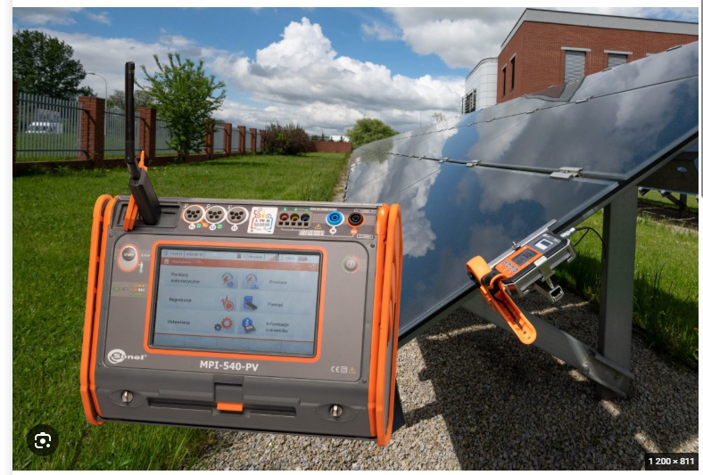

Produkcja jest za niska
Uzyski spadły, różnią się od wcześniejszych lat albo jeden string pracuje słabiej.
Niezależny audyt instalacji PV
Nie oceniam instalacji po samym wykresie z aplikacji. Sprawdzam stronę AC i DC, zabezpieczenia, falownik, parametry stringów i dokumentację. Otrzymujesz pomiary, fakty oraz raport, z którym można planować naprawę albo reklamację.
Bez wymiany sprawnych urządzeń „na próbę”.
Stan instalacji → przyczyna → zalecane działanie
Założyli fotowoltaikę i kazali martwić się samemu?
Niezależnie sprawdzę, co działa poprawnie, co wymaga poprawy i z czego to wynika.Objawy i wątpliwości
Audyt jest dla właściciela instalacji, który chce dostać odpowiedź opartą na danych — nie kolejną opinię bez pomiarów.
Uzyski spadły, różnią się od wcześniejszych lat albo jeden string pracuje słabiej.
Pojawiają się alarmy, wysokie napięcie, restarty albo przerwy w słoneczne dni.
Brakuje wsparcia, protokołów lub jasnej informacji, co faktycznie jest uszkodzone.
Chcesz sprawdzić wykonanie przed podpisaniem protokołu i końcowym rozliczeniem.
Najpierw warto ocenić stan istniejącej instalacji i możliwość bezpiecznej rozbudowy.
Raport porządkuje pomiary, nieprawidłowości, zdjęcia i zalecane dalsze kroki.

Co sprawdzam na miejscu
Falownik, rozdzielnice AC/DC, przewody, złącza, oznaczenia, uziemienie i widoczne ślady uszkodzeń.
Polaryzacja, napięcia stringów, prądy, rezystancja izolacji oraz porównanie obwodów i wejść MPPT.
Napięcia fazowe, ciągłość ochronna, zabezpieczenia oraz warunki pracy falownika i instalacji odbiorczej.
Alarmy, konfiguracja, historia produkcji, schematy, protokoły i zgodność stanu zastanego z dostępnymi dokumentami.
Wynik audytu
Po audycie nie zostajesz z tabelą niezrozumiałych wartości. Otrzymujesz opis stanu instalacji, wyniki oraz czytelną listę dalszych działań.
Raport techniczny może wspierać reklamację, ale nie zastępuje ekspertyzy sądowej ani opinii rzeczoznawcy, jeśli taka jest formalnie wymagana.
Jak to wygląda
Podajesz moc instalacji, falownik, objawy i przesyłasz dostępne zdjęcia lub wykresy.
Dobieram oględziny i pomiary do instalacji oraz celu: odbiór, awaria, spadek produkcji lub reklamacja.
Na miejscu dokumentuję stan instalacji, wykonuję uzgodnione pomiary i analizuję wyniki.
Wiesz, co jest poprawne, co wymaga reakcji oraz jakie działania mają sens w pierwszej kolejności.
Zgłoszenie audytu
Moc instalacji, falownik i krótki opis objawów wystarczą do pierwszej oceny. Jeśli masz zdjęcia, wykresy produkcji albo poprzednie protokoły, możesz je dołączyć.
Nie wysyłaj dowodu osobistego, umów z numerami PESEL ani dokumentów zawierających dane osób trzecich. Do pierwszej analizy wystarczą informacje techniczne.
Decyzja oparta na pomiarach
Po audycie wiesz, co działa poprawnie, co wymaga reakcji i od czego zacząć — bez wymiany urządzeń „na próbę”.
Najczęściej pytacie
Tak. Audyt jest niezależny od wykonawcy. Sprawdzam stan zastany, dostępne dokumenty i szukam konkretnej przyczyny problemu.
Czytelny raport z wynikami, zdjęciami i listą wykrytych nieprawidłowości. Dostaniesz też priorytety: co zrobić od razu, co zaplanować i co działa prawidłowo.
Tak. Raport porządkuje materiał do rozmowy lub reklamacji. Możliwe technicznie poprawki mogę również wycenić po diagnozie.
Wypełnij krótki formularz lub zadzwoń. Podaj moc instalacji, model falownika i opisz objawy — wrócę z propozycją dalszego działania.
Nie zgaduj. Sprawdź.